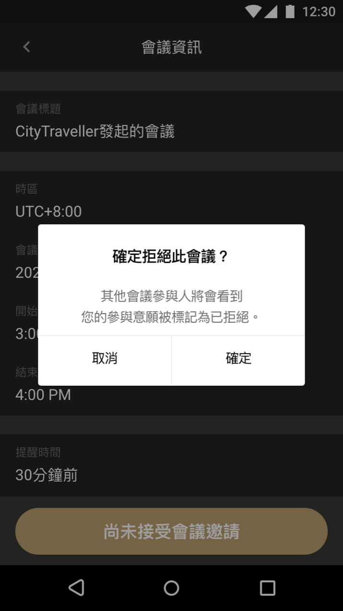
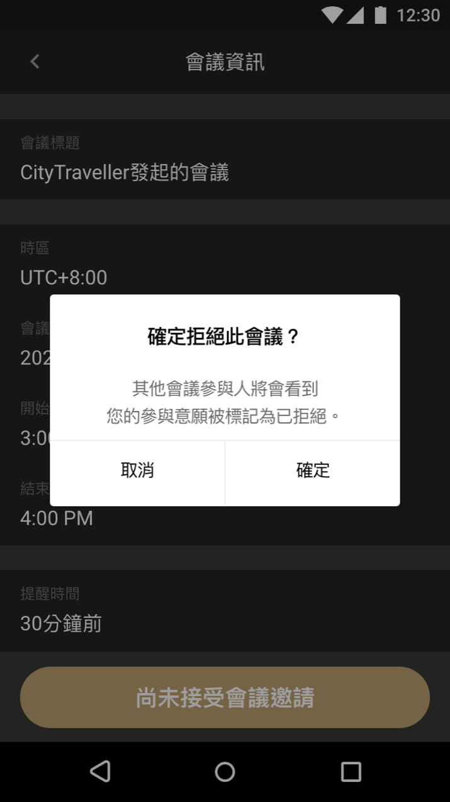
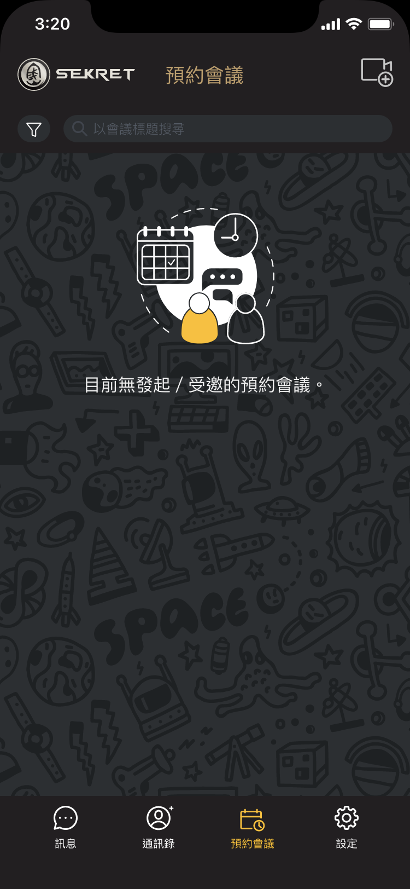
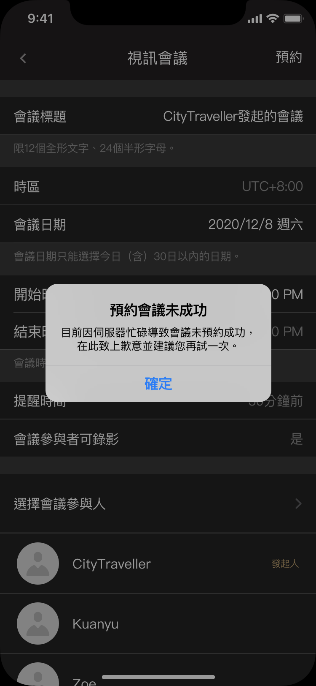
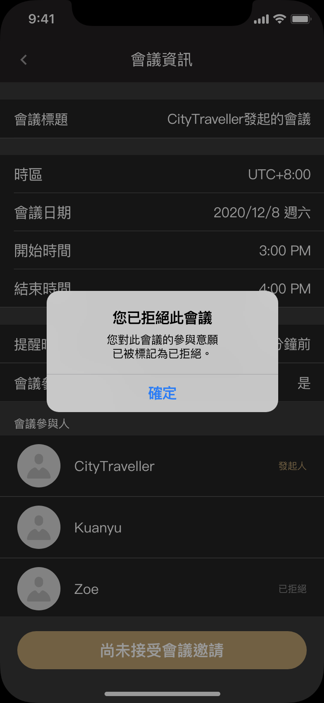

會議預約功能
Meeting Scheduling
背景
Background
這是一個公司創辦人兼產品經理在與公司重要使用者聊過後，希望能夠在主力產品「Sekret」上的功能。「Sekret」是一款通訊軟體，特點是它採用由中研院研發的加密模組為所有使用者發送的訊息及使用者間的音視訊通話進行端對端加密，有Android、iOS及桌機版。
開發時程為一個月，內部分工上團隊夥伴Sunny負責桌機版的設計，我負責Android及iOS版的設計。
開發時程為一個月，內部分工上團隊夥伴Sunny負責桌機版的設計，我負責Android及iOS版的設計。
前後關係
Context
「Sekret」的基本架構不太複雜，手機版在開啟App後，進入下方三個按鈕的分頁中的「訊息頁」，接著使用者可再點擊進入「通訊錄頁」或「設定頁」；而從「訊息頁」點擊任一聊天室，或從「通訊錄頁」點擊任一使用者或群組，皆可進入聊天室來發送訊息，或開始音視訊。
使用者流程
User Flow
由於是新功能且開發時間短，以最小可行為原則；區分出一個預約會議事件中會有「會議發起人」與「會議受邀人」兩種角色後，再考慮到產品經理提出的「若收到會議邀請，需要有系統推播」、「會議受邀人需要能夠拒絕加入會議」、「會議前需要有提醒」三個要求，便可大致定義他們分別的必要流程。
發起會議
上方流程圖中會議發起人的「發起預約會議」流程中，需再細分出「開啟輸入會議資訊以預約會議」、「輸入會議資訊及選擇會議受邀人」及「使系統開始預約會議」等流程，分別可以按鈕及頁面中的輸入格來完成，如下圖所示：
收到會議受邀通知＆收到會議提醒
為了讓會議提醒能盡量即時地出現，「會議受邀通知」與「會議提醒」在手機平台上決定使用推播來進行提醒。另外，為了讓新功能更簡單，會議提醒通知在現階段暫固定為會議開始時間前30分鐘，而不讓使用者自行決定會議提醒時間。
查看已預約 / 受邀會議
在會議預約成功後，無論是會議發起人或是會議受邀人，皆應要能夠隨時可查看其所可參與的會議；而對於某一場會議是發起人的使用者，對於另一場會議可能是受邀人，因此只需一併顯示「自己可參加的會議」即可，發起人之於他自己發起的會議，自動認定他必定會參加。因此可確立以下流程圖：
參與會議
當會議時間到了，在「會議詳細資訊頁面」中就會出現可進入會議的按鈕，點擊後即可進入會議。
整體架構
所有目前列出的頁面當中，如果要選擇一個頁面作為整個功能的起始頁，最適合的是「可參與會議列表」的頁面；而「發起會議」流程當中的第一個「預約會議」按鈕也應該放在此起始頁當中，而第二個「預約會議」按鈕也可直接放在「會議資訊輸入頁」中，點擊後返回會議列表；會議列表中的任一項目點擊後可進入會議詳細資訊頁，若會議時間已到，可點擊「參與會議」按鈕進入會議。
文字版
Wireframes Wireframes with plain text
有了大略的流程後，再以各個頁面為基礎，列出每個頁面所需要包含的元件及他們的互動需求：
Hi-Fi Wireframes
Android版
 

iOS版


